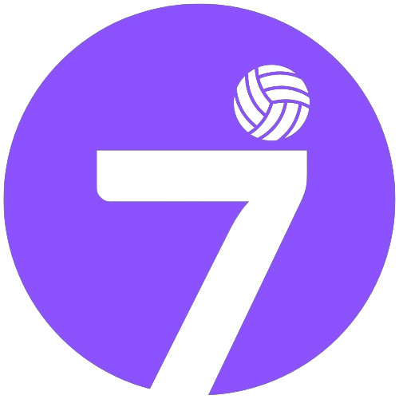

SETNEWS
Superliga: Fluminense perde
para o Sesi Bauru na
Superliga Feminina
 By SetPoint
Atualizado há 4 semanas 31/10/2024
(Foto: @Polygraphando)
Invicto há cinco jogos, o Fluminense conheceu
nesta quinta-feira (31/10) sua primeira derrota na
temporada. Em jogo válido pela terceira rodada
da Superliga Feminina, o time comandado pelo
técnico Guilherme Schmitz foi superado pelo Sesi
Bauru por 3 sets a 0, parciais de 25/16, 25/14 e
25/21, no ginásio do clube Hebraica. Com o
resultado, o Tricolor se mantém com seis pontos
na tabela de classificação.
A ponteira Amanda foi a maior pontuadora
do Fluminense com 11 pontos, seguida da oposta
Ariane, com dez.
O Fluminense volta à quadra no dia 9 de novembro
(sábado), quando enfrenta o Osasco, às 20h, no
Ginásio José Liberatti, em Osasco, São Paulo.
Volte para as noticias